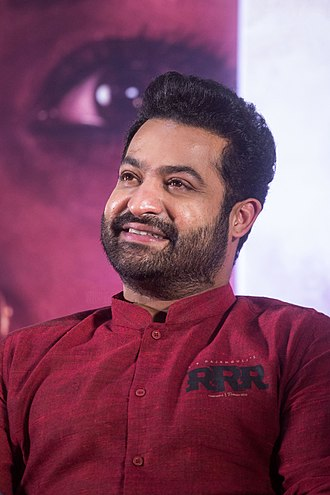

N. T. Rama Rao Jr.
The Film Actor

Nandamuri Taraka Rama Rao Jr. (born 20 May 1983), also known as Jr. N.T.R. or Tarak, is an Indian actor who primarily works in Telugu cinema. One of the
highest paid Telugu film actors,[1][2] Rama Rao Jr. has won several accolades, including two Filmfare Awards, two state Nandi Awards, and four CineMAA
Awards. Since 2012, he has been featured in Forbes India Celebrity 100 list.[3]Grandson of Indian matinee idol, N. T. Rama Rao Sr. who was also the former
Chief Minister of the Indian state of Andhra Pradesh,[4] Rao appeared as a child actor in works such as Brahmarshi Viswamitra (1991), and Ramayanam (1997),
the latter winning the National Film Award for Best Children's Film for that year. Rao made his debut as a lead actor with Ninnu Choodalani (2001). He rose to
prominence with the coming-of-age film Student No. 1 (2001) and the action drama Aadi (2002).Rao established himself as a leading actor in Telugu cinema with
works such as Simhadri (2003), Yamadonga (2007), Adhurs (2010), Brindavanam (2010), Baadshah (2013), Temper (2015), Nannaku Prematho (2016), Janatha
Garage (2016), Jai Lava Kusa (2017), Aravinda Sametha Veera Raghava (2018), and RRR (2022), the latter being his highest-grossing release. He won two
Filmfare Awards for Best Actor – Telugu for his performances in Yamadonga and Nannaku Prematho. He is also notable in the television industry. In 2017, he
hosted the first season of the Telugu language reality TV show Bigg Boss on Star Maa. Rama Rao Jr. started hosting the fifth season of Evaru Meelo Koteeswarulu
in 2021 on Gemini TV.
N. T. Rama Rao Jr. Awards
- Nandi Award for Aadi movie in 2002.
- CineMAA Award for Aadi movie in 2002
- Santosham film Award for Simhadri movie in 2003
- FNCC award for Simhadri movie in 2003
- CineMAA Award for Rakhi movie in 2006
- Filmfare awards south for Yamadonga movie in 2007
- Gemini TV award for Yamadonga movie in 2007
- South Scope Award for Kantri movie in 2008
- CineMAA Award for Temper movie in 2015
- Mirchi music Awards South award for Nannaku Prematho(follow follow song) in 2016
- Mirchi music Awards South award for Chakravyuha(Geleya Geleya song) in 2016
- Zee Cinemalu Award for Janatha Garage movie in 2016
- 2nd IIFA Uttsavam award for Janatha Garage movie in 2016
- HCA Film award for RRR movie in 2023